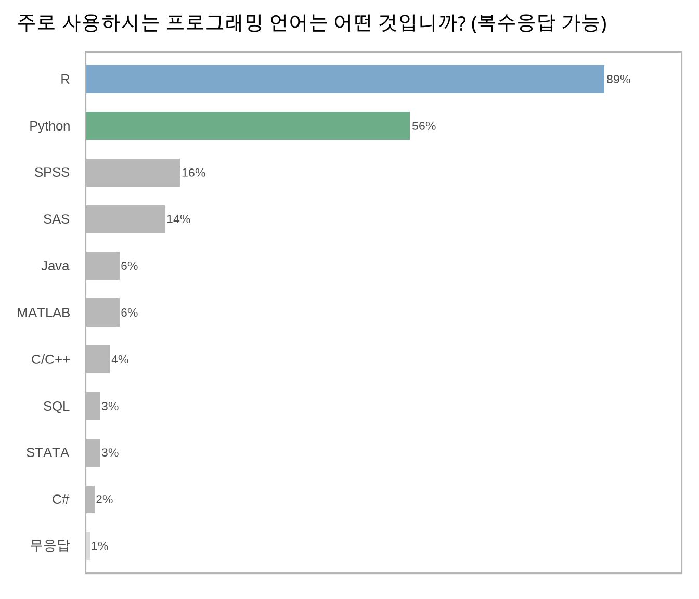
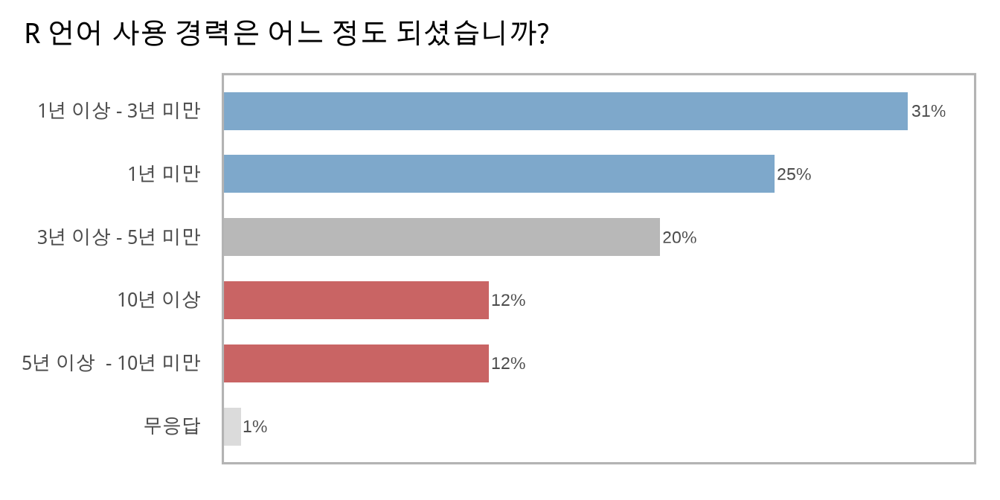
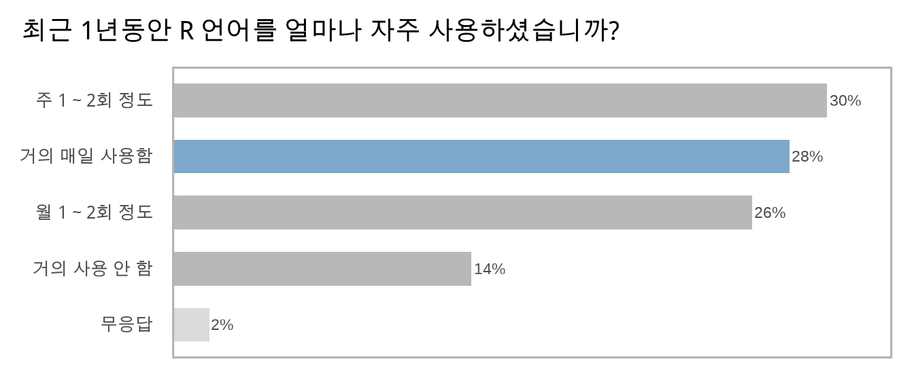
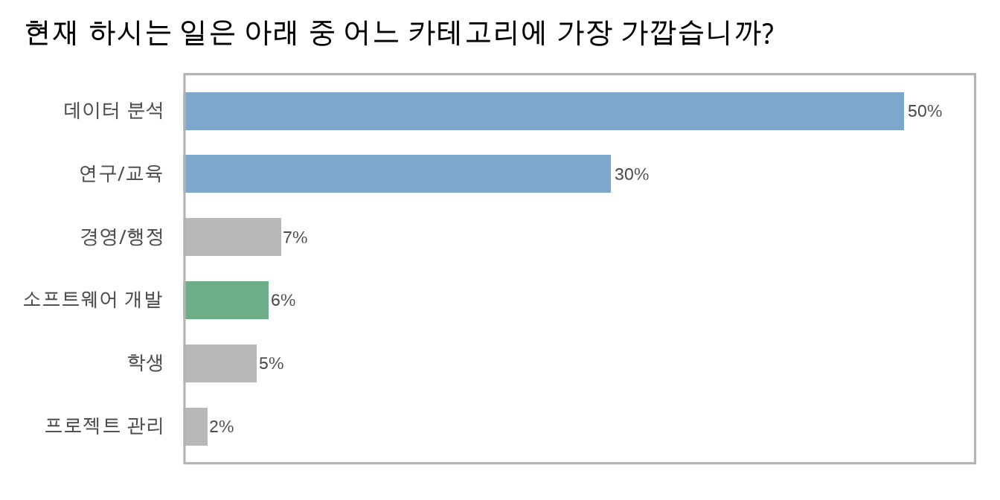
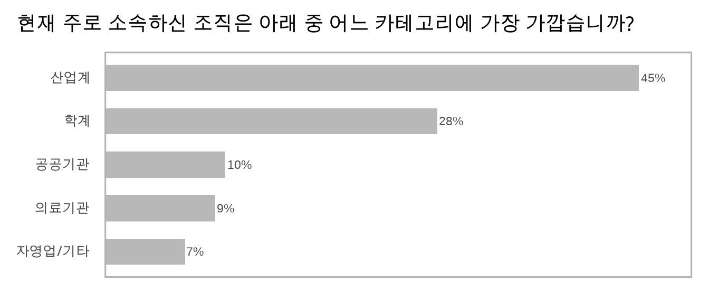

Section 1 참석자 정보
컨퍼런스에 참석하신 분들의 직업 및 R 언어 친숙도 등에 대한 설문입니다.
1.1 주로 사용하시는 프로그래밍 언어는 어떤 것입니까? (복수응답 가능)
대부분의 설문 응답자가 R을 주로 사용하였으며, 절반 이상의 응답자가 Python을 또한 사용하였습니다. 다음 컨퍼런스에서 R과 Python을 함께 사용하는 참석자를 위한 컨텐츠에 대한 필요성을 시사하는 결과였습니다.
그 외, 상용 통계 소프트웨어인 SPSS와 SAS에 대한 응답이 각각 15% 내외였으며, 나머지 언어는 10% 미만의 응답을 나타냈습니다. 아래 열거된 언어 외, 기타 소수 응답으로 Julia, Scala, Minitab, JMP, Linux, HIVE 등이 있었습니다.

1.2 R 언어 사용 경력은 어느 정도 되셨습니까?
절반 이상의 응답자가 3년 미만의 사용경력을 지닌 반면, 5년 이상의 사용경력을 지닌 응답자도 1/4 정도가 되어, 전반적으로 컨퍼런스 참석자의 R 사용 경력이 넓게 분포되어 있음을 볼 수 있었습니다.

1.3 최근 1년동안 R 언어를 얼마나 자주 사용하셨습니까?
응답자의 절반 이상이 매주 R 언어를 사용하였으며, 특히 1/4 이상의 응답자가 R 언어를 거의 매일 사용하는 것으로 나타났습니다.

1.4 현재 하시는 일은 아래 중 어느 카테고리에 가장 가깝습니까?
응답자의 80%가 데이터 분석 및 연구/교육 등 R 언어를 분석 도구로 사용하는 일이 주 업무인 반면, 응답자의 6%만이 소프트웨어 개발 업무를 주 업무로 응답하였습니다.

1.5 현재 주로 소속하신 조직은 아래 중 어느 카테고리에 가장 가깝습니까?
컨퍼런스 참석자가 산업계, 학계, 공공기관, 의료기관 등에 넓게 분포되어 있음을 확인할 수 있었습니다.
